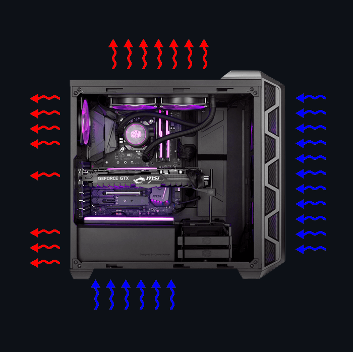
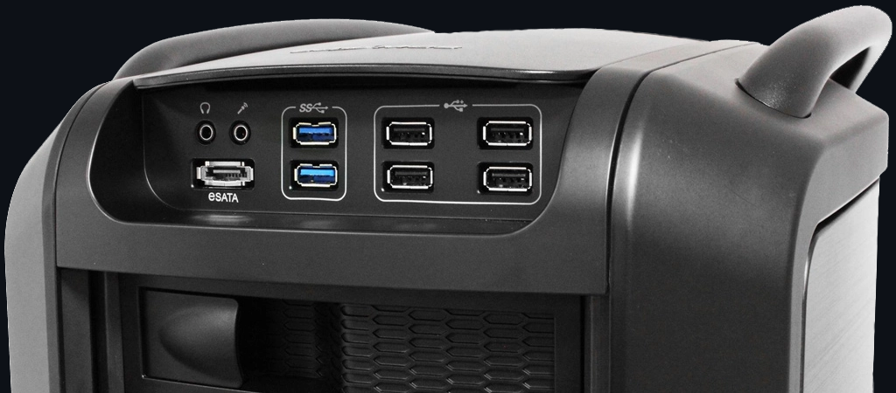
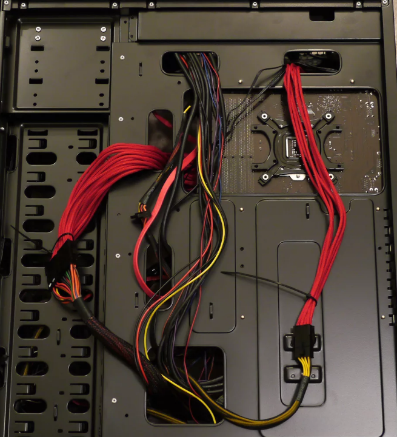
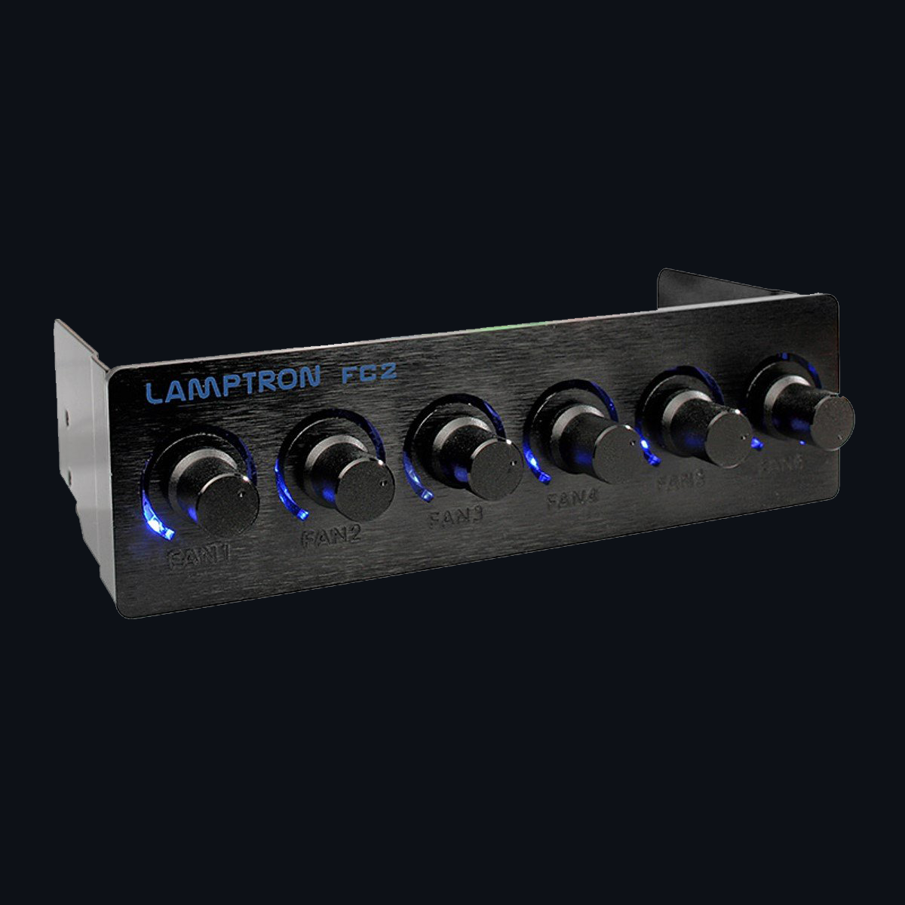

После выбора всех комплектующих компьютера предстаёт задача подобрать под них корпус. Корпус – внешняя оболочка компьютера, защищающая его от пыли и неэффективного распределения воздушных потоков.
Корпусы могут быть самых разных форм, но у все корпуса стандартизированы под один из форм-факторов.
Форм-фактор корпуса
Основной характеристикой коруса является его размер. Все корпуса классифицируются по размеру поддерживаемой материнской платы на:
Нужно учитывать то, что в корпус с поддержкой больших форм-факторов почти всегда можно вставить материнскую плату меньшего размера, но не наоборот.
После сравнения форм-фактора материнской платы с поддерживаемым, крайне рекомендуем сравнить размеры видеокарты, БП (блока питания) и системы охлаждения процессора с допустимыми.
Как правило, в современных ПК в большинстве используются платы размера ATX и Micro ATX. Данные форм-факторы подойдут для сборки ПК любой конфигурации, начиная от офисного варианта, заканчивая игровым или рабочим компьютером.
Желательно заранее спланировать порядок установки и расположение проводов, ведь при неправильном подходе придётся несколько раз устанавливать одни и те же комплектующие для доступа к установке других, кабель-менеджмент также позволит избежать трудностей при сборке ПК, его обновлении, и устранении неполадок.
Также нужно учитывать максимальную длину видеокарты и максимальную высоту охлаждения центрального процессора.
Охлаждение и организация воздушных потоков
В корпусе может располагаться разное количество системных вентиляторов, как заранее установленных, так и требующих Вашего вмешательства в установке.
В системах воздушного охлаждения очевидно, что чем больше вентиляторов, тем лучше, однако не менее важна организация движения потоков воздуха внутри корпуса: холодный воздух поступает снизу, горячий выходит сверху ( 1 ), также не стоить ставить все вентиляторы только на вдув или же только на выдув ( 2 ).
Пример хорошей организации воздушных потоков:

[1] При такой схеме избегается смешивание холодных и горячих потоков вне корпуса, так как горячий воздух легче холодного и стремится вверх, а холодный стремится вниз.
[2.1] Если все вентиляторы ставить на вдув, то такая система повысит давление внутри ПК, что эффективнее защитит его от пыли, но потребует большей работы от вентиляторов для преодоления большего сопротивления воздуха, из-за чего те будут больше шуметь и быстрее изнашиваться.
[2.2] Если все вентиляторы ставить на выдув, то такая система понизит давление внутри ПК, из-за чего пыль будет стремиться внутрь корпуса
Охлаждению способствуют антипылевые фильтры (не забудьте их своевременно очищать) и сетчатые панели корпуса. Однако, сетчатые панели не препятствуют распространению звука, что делает ПК шумнее.
От шума уберегает предустановленный шумопоглощающий материал, но нужно помнить о его стоимости и препятствовании охлаждению. Если Вам не нравится такой вариант, но шум нужно снизить, то в таком случае поможет использование силиконовых гвоздей, ведь они уменьшают вибрации от вентиляторов.
Вместо воздушной системы охлаждения в корпусе может быть предусмотрена и даже предустановлена система водяного охлаждения.
Дополнительные удобства
После рассмотрения способа охлаждения переходим к удобству корпуса.
1. Состав и расположение портов корпуса.

2. Высокие ножки с прорезиненными накладками. Высота позволяет лучше вдувать снизу воздух, а резина препятствует скольжению.
3. Безвинтовое крепление HDD/SDD. Упрощает установку и снятие устройств хранения данных.
4. Возможность укладки кабелей за задней крышкой корпуса.

5. Наличие реобаса (устройства регулировки мощностей вентиляторов) и контроллера вентиляторов, к которому они будут подключаться.

6. Кожух, закрывающий БП. Чаще всего несёт эстетическую функцию, например, если блок питания не будет подходить по цвету корпусу.